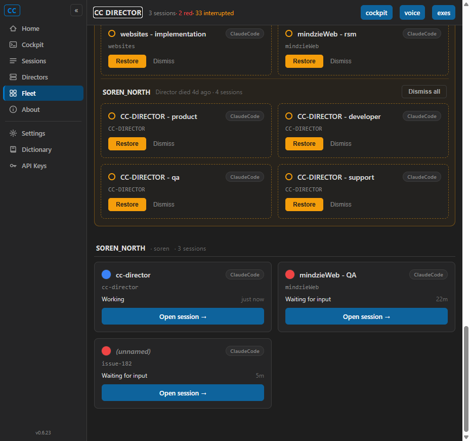
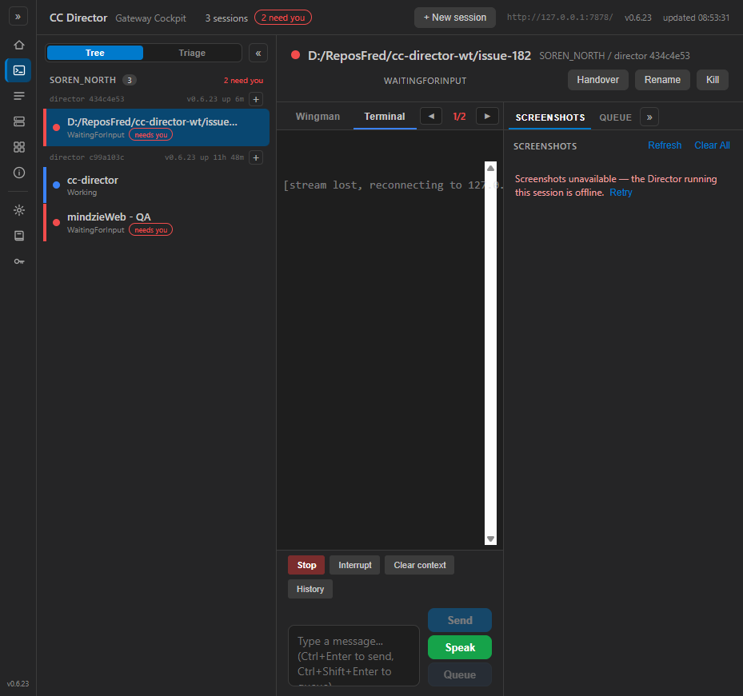

Developer Agent (CenCon Development Method) · branch issue-182-fleet-open-cockpit · 2026-06-14
The /fleet live-session card's "Open session" link used SessionDto.ViewUrl,
which points at the Director's embedded troubleshooting page
https://<tailnet>/sessions/<sid>/view?gw=.... Per the one-URL plan
(docs/plans/one-url-cockpit.md) the Cockpit is the single driving UI behind the Gateway
front door, so the link now deep-links to /cockpit/{sessionId} - the same route the Home
page's needs-you hotlist (Home.razor OpenSession) already uses. The Cockpit
route @page "/cockpit/{SidParam}" selects the session on load via
OnParametersSetAsync -> OnSelect(SidParam, "deep-link"). No new mechanism was invented;
the route param already existed.
src/CcDirector.Cockpit/Components/Pages/Fleet.razor - the live-card anchor:
- @if (!string.IsNullOrWhiteSpace(s.ViewUrl))
- {
- <a class="fl-open" href="@s.ViewUrl">Open session →</a>
- }
+ @if (!string.IsNullOrWhiteSpace(s.SessionId))
+ {
+ <a class="fl-open" href="@($"/cockpit/{s.SessionId}")">Open session →</a>
+ }
SessionDto.ViewUrl is unchanged on the Gateway/Director; the embedded /view
page stays as a direct-URL troubleshooting hatch (matches the issue's recommended Assumption).
| Criterion | Expected | Actual (proven) | Result |
|---|---|---|---|
AC1 - live-card anchor href is /cockpit/<sid>, not /view |
Rendered a.fl-open href = /cockpit/<sessionId> |
DOM read of hydrated /fleet: all 3 a.fl-open anchors =
/cockpit/c748027a..., /cockpit/269e6a0d...,
/cockpit/2567412a-1c1b-47e1-941b-b69af4638339 |
PASS |
AC2 - clicking navigates to /cockpit/<sid> |
URL bar shows that path | After click, location.pathname == /cockpit/2567412a-1c1b-47e1-941b-b69af4638339 |
PASS |
| AC3 - Cockpit opens with that session selected (rail + right pane) and the deep-link log fires | SelectedSessionId == sessionId; brief/detail shown; OnSelect(..., "deep-link") log |
Rail row D:/ReposFred/cc-director-wt/issue-182 carries sess-selected;
right pane header shows that exact session. Cockpit log:[Cockpit] action=select-session source=deep-link sid=2567412a-1c1b-47e1-941b-b69af4638339 |
PASS |
AC4 - no live fleet "Open session" link points at /view |
Grep of rendered /fleet for /view returns no live-card matches |
DOM read: viewLinks: [] - zero anchors containing /view on the page |
PASS |
AC5 - dotnet build cc-director.sln succeeds, no new warnings |
Build succeeded, 0 warnings, 0 errors | Build succeeded. 0 Warning(s) 0 Error(s) |
PASS |
| AC6 - interrupted card "Restore -> Open session" and empty-state unchanged | No regression | No edit to interrupted/empty-state code; INTERRUPTED section renders Restore/Dismiss unchanged (see fleet screenshots) | PASS |
The session created for this proof returned this viewUrl from the Director Control API
(the value the card USED to use):
"viewUrl":"https://soren-north.taildb08ed.ts.net:7890/sessions/2567412a-1c1b-47e1-941b-b69af4638339/view?gw=http%3A%2F%2Flocalhost%3A7878"
After the change the same card's anchor instead resolves to
/cockpit/2567412a-1c1b-47e1-941b-b69af4638339.

The bottom "SOREN_NORTH · soren · 3 sessions" group holds the live cards; each blue
"Open session ->" button is one of the verified /cockpit/<sid> anchors. The INTERRUPTED
section above keeps its Restore/Dismiss buttons (AC6).

URL /cockpit/2567412a-...; left-rail row
D:/ReposFred/cc-director-wt/issue-182 is selected; right pane shows that session's header and
composer. The "stream lost, reconnecting" notice is only the terminal stream from the isolated test
Director - selection and deep-link are what AC3 asserts.
No drift. SessionDto.ViewUrl and the Gateway/Director that compute it are unchanged; no
architecture (architecture_manifest.yaml) or security (security_profile.yaml)
change. Single-anchor client-side repoint within the Cockpit (Fleet Dashboard) container.
Built per-session-isolated on slot 8 from worktree
D:\ReposFred\cc-director-wt\issue-182 (commit c33131a) and launched a test
Director (PID 36036, Control API port 7890) via the cc-director8-launch scheduled task
(scripts/agent-session-isolation.ps1). The Cockpit was run from my branch build output
(bin/Debug/.../cc-director-cockpit.exe, port 7491) and rendered in an isolated
cc-playwright connection; the live anchors and selection were read from the hydrated DOM and the
Cockpit log. The main build and slots 1-5 were never touched.